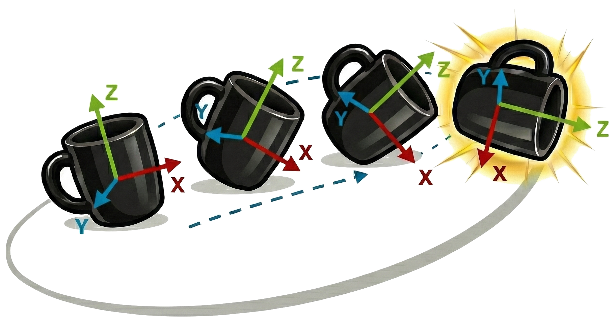

1University of Washington, 2Carnegie Mellon University
*Equal Supervision
Humans can effortlessly anticipate how objects might move or change through interaction—imagining a cup being lifted, a knife slicing, or a lid being closed. We aim to endow computational systems with a similar ability to predict plausible future object motions directly from passive visual observation. We introduce ObjectForesight, a 3D object-centric dynamics model that predicts future 6-DoF poses and trajectories of rigid objects from short egocentric video sequences. Unlike conventional world/dynamics models that operate in pixel or latent space, ObjectForesight represents the world explicitly in 3D at the object level, enabling geometrically grounded and temporally coherent predictions that capture object affordances and trajectories. To train such a model at scale, we leverage recent advances in segmentation, mesh reconstruction, and 3D pose estimation to curate a dataset of 2 million+ short clips with pseudo-ground-truth 3D object trajectories. Through extensive experiments, we show that ObjectForesight achieves significant gains in accuracy, geometric consistency, and generalization to unseen objects and scenes—establishing a scalable framework for learning physically grounded, object-centric dynamics models directly from observation.
ObjectForesight combines a geometry-aware 3D point encoder (PointTransformerV3) with a Diffusion Transformer (DiT) to forecast future object motion. From an anchor-frame point cloud, a short pose history with normalized boxes, and the object mask, we build a scene embedding and predict a multi-modal distribution over future 6-DoF pose sequences via denoising diffusion.
Figure 1. Model architecture. Conditioned on anchor-frame geometry and past poses, ObjectForesight predicts future 6-DoF object trajectories.
We curate large-scale 6-DoF object trajectories from in-the-wild egocentric video using an automated pipeline with quality gates. Starting from action segments, we detect hands and candidate manipulated objects (EgoHOS), refine and track masks over time (SAM2), and filter for clear manipulations and good viewpoints. We reconstruct object geometry (TRELLIS), recover metric depth and camera motion (SpaTrackerV2), and track 6-DoF poses with FoundationPose using bidirectional tracking and re-registration. This yields 2 million+ short, metrically grounded, temporally coherent object-centric trajectories.
Figure 2. Data-curation pipeline. From egocentric video to 3D object trajectories using EgoHOS, SAM2, TRELLIS, SpaTrackerV2, and FoundationPose.
We show qualitative results of ObjectForesight on unseen clips in HOT3D and EpicKitchens. We can see that the future 3D predictions are plausible and correspond meaningfully to manipulations of the object given the context frames as condition.
Video models now have been become very good at generating physically plausible videos given some visual/text context. We compare with a state-of-the-art video generation model Luma Ray 3. Conditioned on the context frames, we generate a video (zero-shot) and recover 6-DoF motion from the generated frames using our curation pipeline. Although these videos exhibit appearance artifacts and provide no explicit 3D constraints, our curation pipeline can still recover approximate object motion from the rendered frames. The recovered trajectories, however, are typically less stable than ObjectForesight's direct predictions, underscoring the advantage of explicitly modeling 3D dynamics rather than inferring them post-hoc from generated videos.
We thank our colleagues at the University of Washington and Carnegie Mellon University for helpful discussions throughout this project.
@misc{soraki2026objectforesightpredictingfuture3d, title={ObjectForesight: Predicting Future 3D Object Trajectories from Human Videos}, author={Rustin Soraki and Homanga Bharadhwaj and Ali Farhadi and Roozbeh Mottaghi}, year={2026}, eprint={2601.05237}, archivePrefix={arXiv}, primaryClass={cs.CV}, url={https://arxiv.org/abs/2601.05237} }